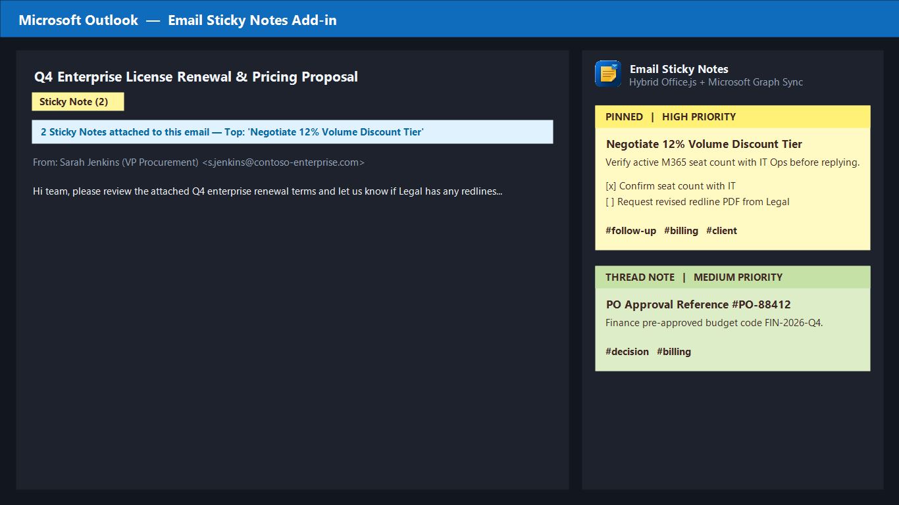

Email Sticky Notes for Outlook
Attach private, color-coded, timestamped sticky notes, interactive action checklists, priority badges, and reminders directly to your emails — without leaving Outlook.

Key Features
- Dual Storage Architecture: Works instantly out-of-the-box using native Office.js Exchange
CustomProperties and RoamingSettings. Optional Microsoft Graph Open Extension sync is available for advanced cloud scenarios.
- Pinnable Taskpane: Pin the sticky notes panel open. As you click through your Inbox messages, notes instantly switch to display annotations for the active email.
- Rich Formatting & Action Checklists: Add formatted note text, interactive to-do checkboxes that track completion progress, and quick priority indicators.
- 6 Color Themes & 4 Priority Levels: Visually categorize notes by urgency (Low, Normal, High, Urgent) and color (Yellow, Cyan, Emerald, Lavender, Coral, Amber).
- Global Cross-Email Search: Find any note, tag, or checklist item across your entire mailbox in seconds. Filter by color, priority, or custom
#tags.
- Inbox Category Tagging: Automatically marks annotated emails in your Outlook message list with a custom category badge so you can spot notes at a glance.
- Native Dark Mode: Seamlessly detects your Outlook theme preference or toggles manually.
- Data Portability: 1-click export to structured JSON or readable Markdown files, with full restore/import support.
100% Private by Design: Email Sticky Notes does not send your notes or email contents to any third-party analytics, tracking, or cloud servers. All note data is stored exclusively in your own Microsoft Exchange mailbox.
How to Install in 30 Seconds
-
Download the Add-in Manifest:
Click Download Manifest (XML) to save email-sticky-notes-manifest.xml to your computer.
-
Open the Outlook Add-in Installer:
Click aka.ms/olksideload to go directly to your Outlook Add-in Management page.
Alternatively, in Outlook on the Web or the New Outlook for Windows, click the Apps icon on the left rail → Add apps → Manage your apps.
-
Upload the Manifest:
Select the My add-ins (or Custom add-ins) tab, click Add a custom add-in → Add from file..., and select the downloaded email-sticky-notes-manifest.xml file. Click Install when prompted.
-
Pin & Start Taking Notes:
Open any email message in your Inbox. Click Email Notes in the ribbon or action bar, then click the Pin (↑) icon in the top-right corner of the pane so notes remain open as you browse your emails.
Frequently Asked Questions
Does this require an Azure AD App Registration or Administrator Consent?
No! The add-in runs immediately in any personal or business mailbox using built-in Office.js mailbox storage. It requires zero cloud setup or admin consent.
Which versions of Outlook are supported?
Email Sticky Notes supports Outlook on the Web (all modern browsers), the New Outlook for Windows, and Classic Outlook for Windows (Microsoft 365 / Office 2016+).
Where can I view the source code or file an issue?
The project is fully open source. You can view the repository, contribute, or submit feedback on GitHub.